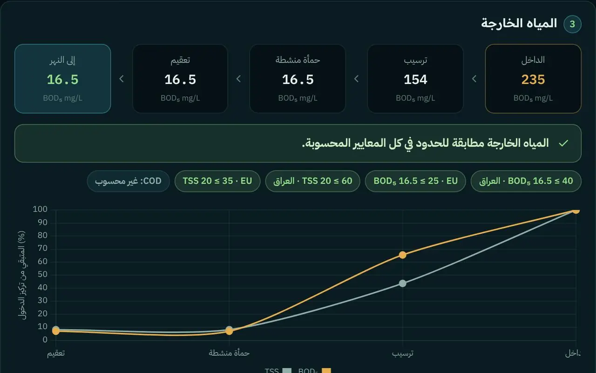
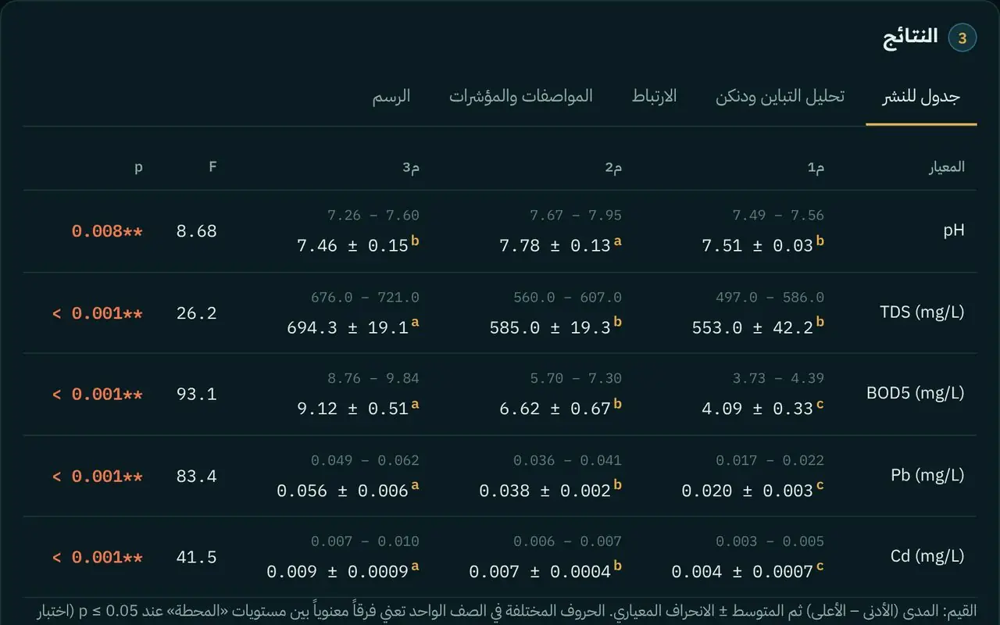
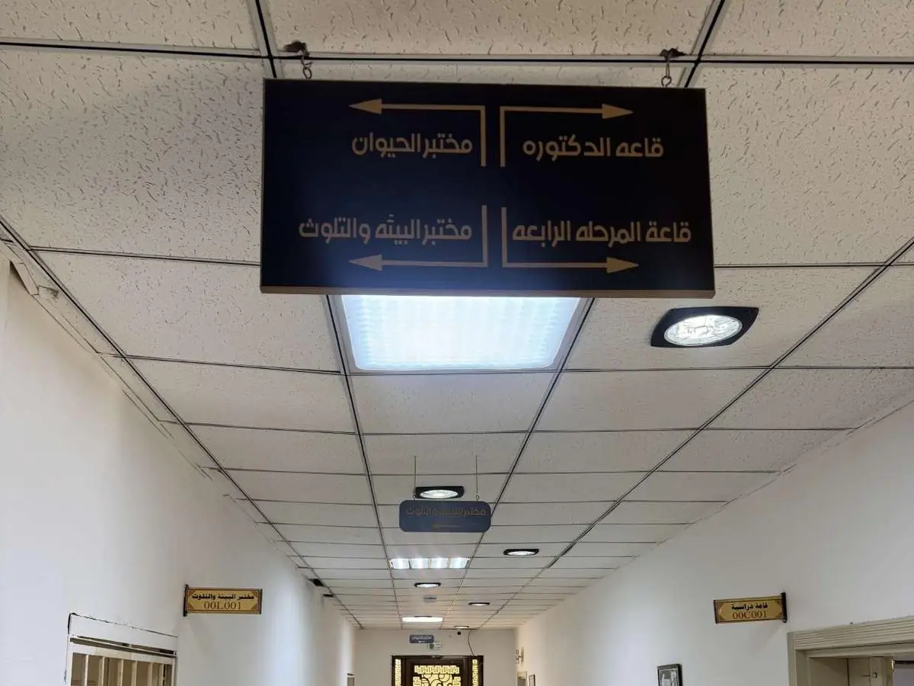

منصة بحثية مفتوحة · قسم علوم الحياة – جامعة تكريت
نرصد التلوث من الفضاء، ونعالجه بالحياة
أدوات مجانية لطلبة البيئة وباحثيها: تابِع هواء صلاح الدين ونهر دجلة من الأقمار الصناعية، وحلّل نتائج عيّناتك، وصمّم طريقة معالجتها من المتصفح مباشرة.
ماذا تريد أن تفعل اليوم؟
المنصة مرتبة على مراحل البحث البيئي، من رصد الهواء والنهر إلى نشر النتائج. ابدأ من المرحلة التي تناسبك.
تبحث عن أداة بعينها؟
جديد في المنصة
أداتان تختصران عليك أيام عمل: تصمّم المعالجة قبل التجربة، وتحلّل جدول نتائجك كاملاً دون برنامج إحصائي.

محاكي محطة المعالجة
اختر نوعية مياهك وركّب مراحل المعالجة (تخثير، ترسيب، ترشيح، امتزاز، معالجة حيوية، تعقيم). المنصة تحسب نوعية المياه الخارجة بعد كل مرحلة، والجرعات والحجوم اللازمة، بمعادلات منشورة.
صمّم معالجتك
محلّل بيانات البيئة
ارفع ملف Excel أو CSV بنتائج محطاتك. تحصل على المتوسطات والانحراف المعياري، وتحليل التباين ANOVA مع اختبار دنكن، ومصفوفة الارتباط، ومؤشرات التلوث، ومقارنة بالمواصفات، ورسوم جاهزة للرسالة.
حلّل بياناتكمن داخل القسم
قسم علوم الحياة – كلية التربية للعلوم الصرفة
تجوّل في طابقَي القسم بثلاثة أبعاد، وادخل مختبر البيئة والتلوث، واضغط على أي جهاز لتعرف ما يقيسه وأي أداة في المنصة تكمّل عمله.

الرصد الفضائي الحي
تقديرات ساعية لملوثات الهواء من نموذج Copernicus CAMS (يدمج أرصاد الأقمار الصناعية بدقة ≈45 كم، وليس قياس محطة أرضية)، مع صور يومية من أقمار NASA فوق صلاح الدين، وتحقق أرضي من أرصاد المطارات القريبة.
محطات الرصد على دجلة
US AQI · تقدير النموذجمؤشر جودة الهواء
القراءات الحالية
اضغط على أي ملوث لعرض سلسلته الزمنية · الحدود من إرشادات WHO 2021السلسلة الزمنية
7 أيام سابقة + توقعات 3 أيام · الخط المتقطع = حد WHOمقارنة المحطات الآن
التحليل الذكي والتعلم الآلي
تحليل آخر 30 يوماً من القراءات الساعية مع الأحوال الجوية: نموذج تعلم آلي يتدرّب أمامك، وكشف الأيام الشاذة، ومؤشر مخاطر مركّب، واتجاه وصول التلوث.
كشف الحالات الشاذة
Robust Z-score على المتوسطات اليومية · |z| ≥ 2.5مؤشر EcoBio للمخاطر
آخر 24 ساعةنموذج تعلم آلي: التنبؤ بالجسيمات PM10
انحدار خطي متعدد منظَّم (Ridge) · تدريب 80% / اختبار 20%أهمية المتغيرات
توقع 48 ساعة: نموذجنا مقابل CAMS
مصفوفة الارتباط
معامل بيرسون rمن أين يأتي التلوث؟
متوسط PM10 حسب اتجاه الرياحالتقرير العلمي بالذكاء الاصطناعي
شغّل التحليل ثم اضغط الزر ليكتب Gemini تقريراً علمياً بالنتائج والتوصيات.
مختبر جودة المياه الذكي
أدخل نتائج تحليل عيّنتك المختبرية ليحسب الموقع مؤشر جودة المياه WQI (طريقة المتوسط الحسابي الموزون) ومؤشر تلوث العناصر الثقيلة HPI، ثم يقترح النظام الخبير طرق المعالجة.
بيانات العيّنة
العناصر الثقيلة
mg/Lتعديل الحدود القياسية المعتمدة
النتيجة
التشخيص الذكي وخطة المعالجة
سجل العيّنات
جولة ثلاثية الأبعاد في قسم علوم الحياة
نسخة مطابقة للقسم الحقيقي: مبنية على المخططين الهندسيين المعلّقين في القسم بأبعادهما (51.11 × 15.90 م)، والأسماء ولوحات الأبواب واللوحات الجدارية مأخوذة من صور القسم نفسه. ادخل من الباب، وتنقّل بين المختبرات والقاعات في الطابقين، واضغط على أي جهاز لتعرف ما يقيسه.
أهلاً بك في قسم علوم الحياة
- اسحب بالماوس أو بإصبعك لتلتفت حولك.
- اضغط على الأرض لتمشي إليها، أو استخدم W A S D والأسهم، أو عصا التحكم على الهاتف.
- اضغط على أي جهاز في المختبر لتعرف ما يقيسه.
- عند الباب ستجد صاحب المنصة يرحّب بك.
محاكاة دجلة ثلاثية الأبعاد: التلوث والمعالجة
قطاع من النهر فيه مصفى نفط ومصب صرف صحي وأراضٍ زراعية. شغّل مصادر التلوث، ثم طبّق المعالجات الحيوية وراقب الأكسجين والأسماك وصحة النهر.
مصادر التلوث
المعالجات
صحة النهر —
المحاكاة تعليمية: نسب الإزالة تقريبية مستمدة من مدى القيم الشائع في الأدبيات، وليست نتائج قياس.
العالم المجهري: المعالجة الحيوية ثلاثية الأبعاد
داخل قطرة ماء ملوثة: البكتيريا تبحث عن جزيئات النفط وتفككها إلى CO₂ وماء، أو تلتقط أيونات العناصر الثقيلة على جدارها الخلوي. غيّر الحرارة والمغذيات وراقب سرعة المعالجة.
نوع التلوث
نسبة الإزالة
مكتبة الملوثات ثلاثية الأبعاد
نماذج الكرة والعصا بأطوال روابط وزوايا حقيقية تقريبية. اختر ملوثاً لتعرف مصدره وأثره وحده المسموح وطريقة معالجته.
المساعد الذكي للتلوث والمعالجة
مساعد يعمل بنموذج Gemini من Google، موجَّه بتعليمات نظام وقاعدة معرفة متخصصة في المعالجة الحيوية وتلوث دجلة، ويستطيع قراءة بيانات المنصة الحية.
جرّب أن تسأل
التخصص يأتي من تعليمات النظام وقاعدة المعرفة في ملف js/config.js، ويمكنك توسيعها بمعلومات بحثك.
مرحباً، أنا مساعد EcoBio AI
اسألني عن المعالجة الحيوية، تلوث المياه والهواء والتربة، تصميم تجربة مختبرية، أو اطلب تحليل القراءات الحالية لمحطات دجلة. ويمكنك إرفاق بحث أو تقرير PDF أو صورة لأقرأه وألخّصه وأستخرج نتائجه.
خريطة العينات الحقلية
حدد مواقع عيناتك على صور فضائية عالية الدقة، وسجّل نتائجها، وافتح أي موقع في خرائط Google. العينات تُحفظ في جهازك ويمكن مشاركتها برابط أو ملف.
مواقع بحوث الأساتذة
…مواقع عمل الباحثين وأساتذة الجامعات على الخريطة، مع عناوين بحوثهم ونتائجها. كل موقع يراجَع من المشرفة قبل أن يظهر، ثم يظهر لكل زوار المنصة.
مراجعة مساهمات الباحثين
المواقع التي يضيفها الأساتذة لا تظهر للعموم إلا بعد موافقتك هنا. كلمة السر تُحفظ في هذه الجلسة فقط.
بحوث جامعة تكريت
نتائج منشورة فعلاً لباحثي جامعة تكريت عن تلوث المياه والرواسب في صلاح الدين. كل رقم منقول من مصدره مع رابطه، ويمكن إرساله مباشرة إلى المختبر والحاسبات.
توأم رقمي · نهر دجلة · صلاح الدين
توأم دجلة الرقمي
نهر دجلة الحقيقي في صلاح الدين بثلاثة أبعاد: تضاريس وصور أقمار حقيقية، وآلة زمن تعود إلى عام 1984 وتحسب مساحة الماء من الفضاء، ومحاكاة تسرب ملوث تحسب متى يصل إلى كل مدينة بتصريف النهر الحقيقي.
دجلة من الفضاء
صور حقيقية من القمر الأوروبي Sentinel-2 لنهر دجلة بدقة 10 أمتار، تصل صورة جديدة كل يومين إلى خمسة أيام. اختر تاريخاً واضغط على مجرى النهر لتقرأ مؤشري العكورة والكلوروفيل، ثم تتبّع النقطة عبر الأشهر والسنين وقارنها بعيناتك الحقلية.
المصدر: Copernicus Sentinel-2 Level-2A (وكالة الفضاء الأوروبية) عبر Microsoft Planetary Computer. مؤشر العكورة NDTI = (B04 − B03) / (B04 + B03) (Lacaux وآخرون، 2007)، ومؤشر الكلوروفيل NDCI = (B05 − B04) / (B05 + B04) (Mishra وMishra، 2012). المؤشرات نسبية من الانعكاسية السطحية، تصلح للمقارنة عبر الزمن والمكان، ولا تساوي تراكيز مختبرية.
خريطة الفجوات البحثية
ماذا دُرس، وأين، ومتى في محافظة صلاح الدين؟ الجدول يجمع بحوث جامعة تكريت المنشورة في المنصة ومواقع البحوث التي يضيفها الأساتذة، ويُظهر الخانات الفارغة التي تصلح موضوعات لرسائل جديدة.
المنطقة × محور البحث
مدروس خلال 5 سنواتأقدم من 5 سنواتفجوةالأعداد حسب البحوث المسجلة في المنصة فقط، وليست حصراً لكل ما نُشر. كلما أضاف الأساتذة مواقع بحوثهم من «خريطة العينات» صارت الخريطة أدق.
المجهر الذكي – مؤشر Palmer
صوّر شريحة الطحالب من عدسة المجهر بالهاتف فيقترح الذكاء الاصطناعي الأجناس الظاهرة، ثم تؤكدها أنت ويحسب الموقع مؤشر Palmer (1969) للتلوث العضوي: 20 فأكثر تلوث عالٍ، و15–19 تلوث محتمل، وأقل من 15 تلوث قليل.
1. صور الشريحة
حتى 4 صور · اختياريضع عدسة الهاتف ملاصقة للعدسة العينية للمجهر، وصوّر بقوة 40× أو 100× بإضاءة متوسطة. يمكنك أيضاً اختيار الأجناس يدوياً بلا صور.
3. النتيجة
Palmer, 1969النتائج المحفوظة
2. أجناس مؤشر Palmer في العينة
20 جنساً · الدرجة بجانب كل جنس3. أجناس دلالة مسجّلة في دجلة والعراق
للتعرّف والمقارنة — لا تُحتسب في مؤشر Palmerأجناس طحالب موثّقة في نهر دجلة وأنهار العراق من دراسات منشورة، مع دلالتها البيئية (حسّاس = مياه أنظف، متحمّل = تلوث عضوي). تساعد الطالب على التعرّف والمقارنة، ويشخّصها الذكاء الاصطناعي أيضاً.
الحاسبات العلمية للتلوث والمعالجة
حاسبات بمعادلات منشورة ومراجع مذكورة: مؤشرات المياه والري، تلوث الرواسب، المخاطر الصحية، حسابات المختبر، حركية المعالجة الحيوية، الامتصاص الحيوي، والمعالجة النباتية.
قراءة الصور: لون الماء وأوراق النتائج
صوّر الماء فيحسب الموقع مؤشر لون الماء Forel-Ule بالطريقة العلمية نفسها المستخدمة مع صور الأقمار الصناعية، مع مؤشرات تقريبية للعكورة والطحالب والزيت. ويمكنه أيضاً قراءة ورقة نتائج مختبر من صورة.
اسحب بإصبعك أو بالفأرة لتحديد منطقة الماء فقط (تجنّب الضفاف والسماء والانعكاسات).
تفسير الذكاء الاصطناعي للصورة
بعد رفع الصورة، يقرأ Gemini العلامات المرئية (لون، رغوة، زيت، طحالب، نفايات) ويقارنها بالمؤشرات المحسوبة.
القيم المستخرجة
مركز التقارير
تقارير PDF رسمية باسم المختبر تتضمن الجداول والرسوم والصور، جاهزة للمشرف أو للبحث. عدّل بيانات الترويسة مرة واحدة فتُستخدم في كل التقارير.
ترويسة التقارير
محاكي محطة المعالجة
صِف مياهك الداخلة وفعّل مراحل المعالجة، فيحسب المحاكي نوعية المياه بعد كل مرحلة، وحجوم الأحواض والجرعات والأكسجين والحمأة، ويقارن الناتج بحدود التصريف العراقية والدولية. كل رقم مبني على معادلة منشورة، وما لا يملك نموذجاً موثقاً يظهر «غير محسوب».
1المياه الداخلة
2مراحل المعالجة
بترتيبها في المحطة3المياه الخارجة
القيم الباهتة: المرحلة لا تملك نموذجاً موثقاً لهذا المعيار فنُقلت قيمته كما هي (تقدير متحفظ).
4تصميم المراحل
للتصريف المُدخَلمحلّل بيانات البيئة
ارفع جدول نتائج محطاتك من Excel أو CSV، أو الصقه مباشرة، فتحصل على جدول المتوسطات والانحراف المعياري بحروف اختبار دنكن، وتحليل التباين، ومصفوفة الارتباط، والمقارنة بالمواصفات، ومؤشرات التلوث، ورسوم جاهزة للرسالة. الحساب كله يجري في متصفحك ولا تُرفع بياناتك لأي خادم.
1بياناتك
الصف الأول عناوين الأعمدة، وكل صف بعده قياس واحد: عمود للمحطة (وعمود للفصل أو الشهر إن وُجد) ثم عمود لكل معيار.
أو الصق الجدول من Excel
2ما معنى كل عمود؟
3النتائج
قاعدة بيانات أقضية دجلة
قياسات حقيقية لكل قضاء من أقضية صلاح الدين الستة المطلة على نهر دجلة: ملوثات الهواء يومياً منذ 2022، والطقس منذ 2015، وتصريف النهر منذ 2000، وعكورة الماء وطحالبه من القمر Sentinel-2 منذ 2017، ومصادر التلوث المرسومة، وبحوث جامعة تكريت. تتحدّث كل يوم آلياً، وتُعاد معها تدريب نماذج الذكاء الاصطناعي التي تتوقّع الهواء وتكشف الأيام الشاذة.
عن المشروع
أهداف المشروع
- رصد ملوثات الهواء فوق نهر دجلة في صلاح الدين اعتماداً على بيانات الأقمار الصناعية وتحديثها آلياً.
- توظيف التعلم الآلي لكشف الحالات الشاذة والتنبؤ بتراكيز الجسيمات العالقة.
- تقييم جودة المياه بمؤشري WQI وHPI وربط النتائج بطرق المعالجة الحيوية المناسبة.
- تقديم محتوى تعليمي تفاعلي ثلاثي الأبعاد لآليات التلوث والمعالجة.
المنهجية
- بيانات الهواء: نموذج Copernicus CAMS العالمي (دقة 0.4° ≈ 45 كم، تحديث كل 12 ساعة) عبر Open-Meteo، ويدمج أرصاد أقمار مثل Sentinel-5P وMODIS.
- الصور الفضائية: طبقات NASA GIBS اليومية (VIIRS، MODIS، OMI) للهباء وNO₂ والغطاء النباتي.
- التعلم الآلي: انحدار Ridge بمتغيرات جوية وزمنية وقيمة سابقة، مع تقييم R² وRMSE وMAE على 20% من البيانات.
- كشف الشذوذ: Robust Z-score بالوسيط والانحراف المطلق الوسيط (MAD).
- جودة المياه: WQI بطريقة Brown وآخرون (المتوسط الحسابي الموزون)، وHPI لـ Mohan وآخرون (1996).
- المساعد الذكي: Gemini API مع تعليمات نظام وقاعدة معرفة متخصصة.
- لون الماء: مؤشر Forel-Ule من زاوية اللون في فضاء CIE 1931 وفق جدول Wang وآخرون (2021).
- الرواسب والمخاطر: Igeo (Müller 1969)، CF وRI (Håkanson 1980)، PLI (Tomlinson 1980)، ونموذج المخاطر الصحية لـ US EPA.
حدود الدقة
- قراءات الهواء ناتجة عن نموذج يدمج أرصاد الأقمار الصناعية بدقة مكانية نحو 45 كم، فهي تمثل المنطقة لا نقطة بعينها، ولا تغني عن محطات القياس الأرضية.
- صور الأقمار تتأثر بالغيوم، وبعض الطبقات (مثل NO₂) تتأخر بضعة أيام.
- رصد تلوث مياه دجلة كمياً من الفضاء يحتاج صور Sentinel-2 ومعالجة في Google Earth Engine؛ لذلك تُدخَل نتائج المياه من التحليل المختبري، وتُستخدم الصور الفضائية لتحديد المواقع ومشاهدة النهر.
- قراءة لون الماء من صورة الهاتف (Forel-Ule) مؤشر تقريبي للفرز، ولا تغني عن التحليل المختبري.
- بحوث جامعة تكريت في المنصة منقولة كما نُشرت؛ مواقعها على الخريطة تقريبية لأن البحوث لم تنشر إحداثيات المحطات.
- عند انقطاع الاتصال لا تعرض المنصة أي أرقام تقديرية بدل البيانات الحقيقية.
- محاكاة النهر والعالم المجهري تعليمية ونسبها تقريبية.